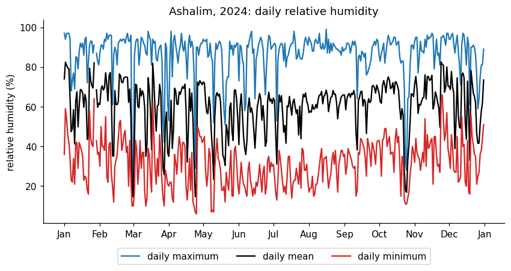
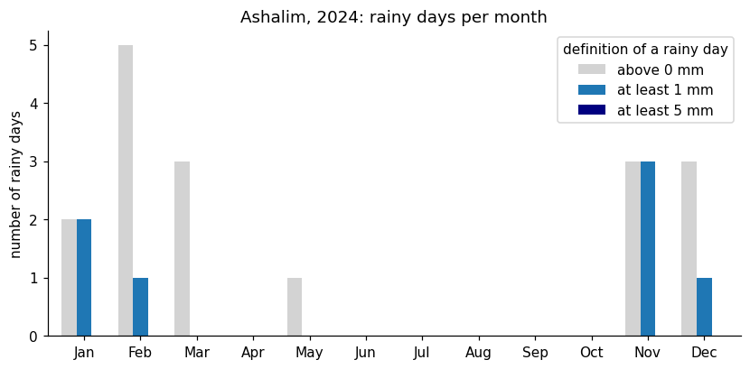
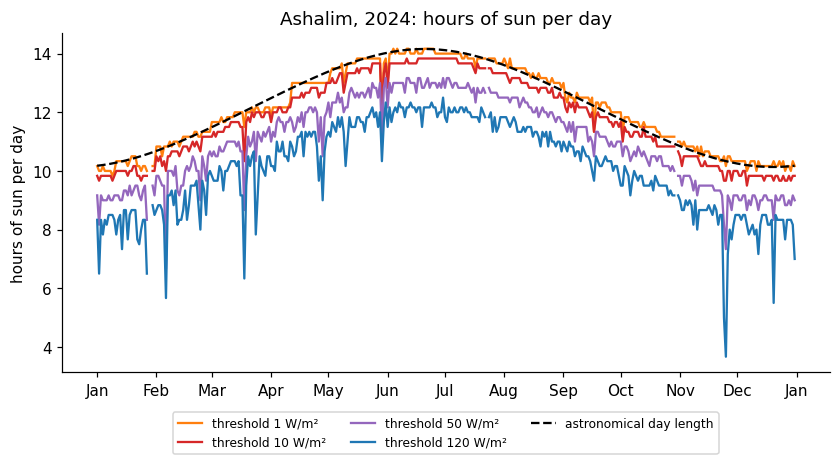
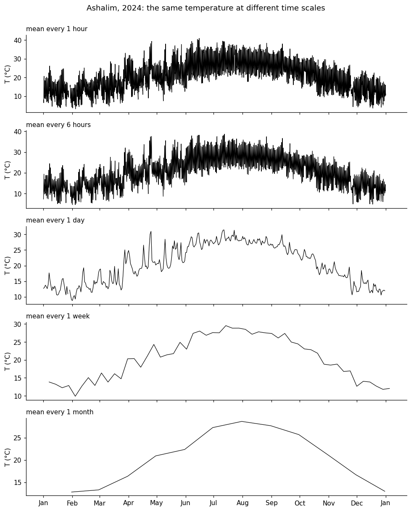
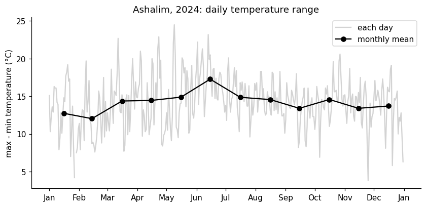
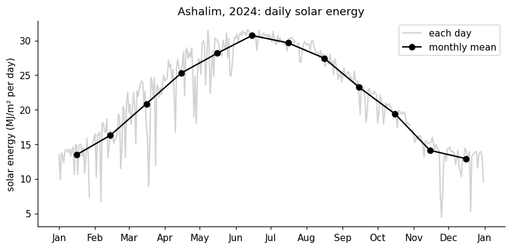

import numpy as np
import pandas as pd
import matplotlib.pyplot as plt
import matplotlib.dates as mdates
# settings for all the graphs: resolution, and no lines on the top and right of the axes
plt.rcParams.update({'figure.dpi': 110,
'axes.spines.top': False,
'axes.spines.right': False})
def month_axis(ax):
"""show month names on the horizontal axis"""
ax.xaxis.set_major_locator(mdates.MonthLocator())
ax.xaxis.set_major_formatter(mdates.DateFormatter('%b'))65 homework: resampling answers
Station: Ashalim, 2024, 10-minute data from the IMS (ashalim_2024.csv), in the Negev desert.
65.1 Import data and basic processing
filename = "ashalim_2024.csv"
# the IMS writes '-' where there is no measurement
df = pd.read_csv(filename, na_values=['-'])
# the IMS column that holds the time starts with "Date & Time"
time_column = [c for c in df.columns if c.startswith('Date & Time')][0]
# turn the text into datetimes (the day comes first!) and use them as the index
df['date'] = pd.to_datetime(df[time_column], dayfirst=True)
df = df.set_index('date')
# shorter names for the columns we will use
df = df.rename(columns={'Temperature (°C)': 'temperature',
'Rainfall (mm)': 'rain',
'Relative humidity (%)': 'humidity',
'Global radiation (W/m^2)': 'radiation'})
# the file ends with a single record from 2025-01-01 00:00, we keep only 2024
df = df.loc['2024']
df.head()| Station | Date & Time (Winter) | radiation | humidity | temperature | rain | |
|---|---|---|---|---|---|---|
| date | ||||||
| 2024-01-01 00:00:00 | Ashalim | 01/01/2024 00:00 | 0.0 | 95.0 | 8.8 | 0.0 |
| 2024-01-01 00:10:00 | Ashalim | 01/01/2024 00:10 | 0.0 | 95.0 | 8.4 | 0.0 |
| 2024-01-01 00:20:00 | Ashalim | 01/01/2024 00:20 | 0.0 | 95.0 | 8.3 | 0.0 |
| 2024-01-01 00:30:00 | Ashalim | 01/01/2024 00:30 | 0.0 | 95.0 | 7.9 | 0.0 |
| 2024-01-01 00:40:00 | Ashalim | 01/01/2024 00:40 | 0.0 | 94.0 | 7.6 | 0.0 |
Let’s check the data.
# the time between consecutive records should always be 10 minutes: look for longer gaps
step = df.index.to_series().diff()
print("gaps longer than 30 minutes:")
print(step[step > pd.Timedelta('30min')])
print()
# how many records are missing, compared with a full year?
expected = 366 * 24 * 6 # 2024 is a leap year
print(f"records: {len(df)}, expected for a full year: {expected}, missing: {expected - len(df)}")
print()
# the records that exist, but are empty (NaN)
print(df[['radiation', 'humidity', 'temperature', 'rain']].isna().sum())gaps longer than 30 minutes:
date
2024-01-29 12:30:00 1 days 13:40:00
2024-05-09 13:10:00 0 days 00:40:00
2024-05-29 14:40:00 0 days 02:00:00
2024-07-23 09:20:00 0 days 07:50:00
Name: date, dtype: timedelta64[ns]
records: 52409, expected for a full year: 52704, missing: 295
radiation 35
humidity 14
temperature 15
rain 2
dtype: int64295 of the 52,704 records of the year are missing (0.6%). The longest gap is 1.5 days, on 28-29 January, and there are also 8 hours missing on 23 July. Careful: the sum of a day without records is 0, not NaN, so a day without data looks like a day without rain or sun.
65.2 Part 1: the classics
65.2.1 Graph 1: daily maximum humidity (bonus: daily minimum)
My prediction: at night the air cools and the humidity rises, while in the afternoon the desert air is dry. I expect a daily maximum of 70-95% and a minimum of 10-30%, with the maximum varying little compared with the minimum.
# one resample, three statistics: the daily minimum, mean and maximum
daily_hum = df['humidity'].resample('D').agg(['min', 'mean', 'max'])
# plotting
fig, ax = plt.subplots(figsize=(9, 4))
ax.plot(daily_hum['max'], color='tab:blue', label='daily maximum')
ax.plot(daily_hum['mean'], color='black', label='daily mean')
ax.plot(daily_hum['min'], color='tab:red', label='daily minimum')
month_axis(ax)
ax.set(ylabel='relative humidity (%)', title='Ashalim, 2024: daily relative humidity')
ax.legend(ncol=3, loc='upper center', bbox_to_anchor=(0.5, -0.1))
# how much does each line vary during the year?
print("standard deviation of each line during the year (percentage points):")
print(daily_hum.std().round(1))
print()
# the monthly mean of each line
print("monthly means of each line:")
monthly_hum = daily_hum.resample('ME').mean().round(0)
print(monthly_hum.set_index(monthly_hum.index.strftime('%b')).T)standard deviation of each line during the year (percentage points):
min 11.6
mean 12.8
max 11.3
dtype: float64
monthly means of each line:
date Jan Feb Mar Apr May Jun Jul Aug Sep Oct Nov Dec
min 37.0 36.0 28.0 29.0 27.0 24.0 26.0 28.0 35.0 34.0 40.0 34.0
mean 65.0 65.0 56.0 57.0 55.0 55.0 58.0 63.0 63.0 60.0 69.0 61.0
max 87.0 89.0 84.0 86.0 84.0 85.0 88.0 91.0 87.0 83.0 91.0 86.0
What I found, and why: the maximum is high (85-95%) and the minimum is low (10-40%), as expected. But I was wrong about the variability: the maximum varies as much as the minimum (standard deviation of 11 points), and the daily mean varies the most (13 points). On dry days (1 March, 24 April, 24-25 October) the whole curve collapses, even the daily maximum falls to 22-32%.
65.2.2 Graph 2: rainy days per month
My prediction: very few rainy days, all in winter, many of them just traces. With at least 5 mm I expect almost none.
# the rain of each day is the sum of its 10-minute records
daily_rain = df['rain'].resample('D').sum()
# the smallest non-zero value is the resolution of the rain gauge
print("smallest non-zero value in the rain column:", df['rain'][df['rain'] > 0].min(), "mm")
print(f"total rain in the year: {daily_rain.sum():.1f} mm")
# number of rainy days in each month, with three definitions of "rainy day":
# a boolean series (True/False) summed by month counts the True values
counts = pd.DataFrame({'above 0 mm': (daily_rain > 0).resample('ME').sum(),
'at least 1 mm': (daily_rain >= 1).resample('ME').sum(),
'at least 5 mm': (daily_rain >= 5).resample('ME').sum()})
counts.index = counts.index.strftime('%b') # month names instead of dates
# plotting
fig, ax = plt.subplots(figsize=(9, 4))
counts.plot.bar(ax=ax, color=['lightgray', 'tab:blue', 'navy'], width=0.8)
ax.set(xlabel='', ylabel='number of rainy days', title='Ashalim, 2024: rainy days per month')
ax.tick_params(axis='x', rotation=0)
ax.legend(title='definition of a rainy day')
# the numbers behind the graph
print()
print(counts.T)
print()
print("total in the year:")
print(counts.sum())smallest non-zero value in the rain column: 0.1 mm
total rain in the year: 17.1 mm
date Jan Feb Mar Apr May Jun Jul Aug Sep Oct Nov Dec
above 0 mm 2 5 3 0 1 0 0 0 0 0 3 3
at least 1 mm 2 1 0 0 0 0 0 0 0 0 3 1
at least 5 mm 0 0 0 0 0 0 0 0 0 0 0 0
total in the year:
above 0 mm 17
at least 1 mm 7
at least 5 mm 0
dtype: int64
What I found, and why: there are 17 days with rain above 0 mm, 7 with at least 1 mm, and none with at least 5 mm. So the answer to “how many rainy days?” depends on the definition. The year was drier than I expected (17.1 mm in total), and the smallest non-zero value is 0.1 mm, the resolution of the gauge. The station was off on 28-29 January, right after the wettest day, so we don’t know what happened then.
65.2.3 Graph 3: hours of sun per day
My prediction: clear skies, so a smooth curve, about 14 hours in June and 10 hours in December, with dips on cloudy winter days. The 1 W/m^2 threshold should be the closest to the real day length, and 120 W/m^2 should lose 1-2 hours.
# a day without records would have a sum of 0, and look like a day without sun!
# so we keep only the days with at least 90% of the records (144 records per day)
valid_records = df['radiation'].resample('D').count()
complete_day = valid_records >= 0.9 * 144
print(f"days without enough radiation records: {(~complete_day).sum()}")
# hours of sun: count the records above the threshold, and divide by 6 (records per hour)
thresholds = [1, 10, 50, 120]
sun_hours = pd.DataFrame({f'{t} W/m²': ((df['radiation'] > t).resample('D').sum() / 6).where(complete_day)
for t in thresholds})
# the real day length, computed from the position of the sun, for comparison
latitude = 30.97 # approximate latitude of Ashalim
def day_length(date):
n = date.dayofyear
declination = np.deg2rad(23.44) * np.sin(2 * np.pi * (284 + n) / 365)
lat = np.deg2rad(latitude)
cos_h = (np.sin(np.deg2rad(-0.833)) - np.sin(lat) * np.sin(declination)) / (np.cos(lat) * np.cos(declination))
return 24 / np.pi * np.arccos(cos_h)
real_day = pd.Series([day_length(d) for d in sun_hours.index], index=sun_hours.index)
# plotting
fig, ax = plt.subplots(figsize=(9, 4))
for col, color in zip(sun_hours.columns, ['tab:orange', 'tab:red', 'tab:purple', 'tab:blue']):
ax.plot(sun_hours[col], color=color, label=f'threshold {col}')
ax.plot(real_day, color='black', ls='--', label='astronomical day length')
month_axis(ax)
ax.set(ylabel='hours of sun per day', title='Ashalim, 2024: hours of sun per day')
ax.legend(ncol=3, loc='upper center', bbox_to_anchor=(0.5, -0.1), fontsize=8)
# thresholds vs. the real day length on the longest and the shortest day
summary = sun_hours.loc[['2024-06-21', '2024-12-21']].copy()
summary['astronomical'] = real_day.loc[['2024-06-21', '2024-12-21']]
print(summary.round(2))days without enough radiation records: 4
1 W/m² 10 W/m² 50 W/m² 120 W/m² astronomical
date
2024-06-21 14.17 13.83 13.00 12.17 14.16
2024-12-21 10.17 9.83 9.17 8.50 10.14
What I found, and why: the 1 W/m^2 line matches the real day length (computed from the latitude: 14.2 h in June, 10.1 h in December) within a few minutes. Higher thresholds cut the morning and the evening: on 21 June, 10 W/m^2 loses 20 minutes, 50 W/m^2 about 1 hour, and 120 W/m^2 2 hours. The 120 line also drops sharply on cloudy days, which the low thresholds ignore. So there is no single correct threshold: low for the day length (the photoperiod of a plant), high for bright sunshine. I removed 4 days with too few records, otherwise 28 January would show 0 hours of sun.
65.3 Part 2: one signal, many time scales
My prediction: the daily cycle is clear in the hourly data and disappears with daily means. Only the seasons survive in the monthly data. Since the daily cycle is large in the desert, I expect the standard deviation to drop noticeably from hourly to daily.
temp = df['temperature']
# the same variable at five resolutions: only the resampling rule changes
rules = ['1h', '6h', 'D', 'W', 'ME']
names = ['1 hour', '6 hours', '1 day', '1 week', '1 month']
# plotting: one panel for each resolution, all sharing the time axis
fig, axes = plt.subplots(len(rules), 1, sharex=True, figsize=(9, 11))
for ax, rule, name in zip(axes, rules, names):
ax.plot(temp.resample(rule).mean(), color='black', lw=0.8)
ax.set_ylabel('T (°C)')
ax.set_title(f'mean every {name}', loc='left', fontsize=10)
month_axis(axes[-1])
fig.suptitle('Ashalim, 2024: the same temperature at different time scales', y=1.0)
fig.tight_layout()
# how much variability is left at each resolution?
print("standard deviation (°C) of the series at each resolution:")
print(pd.Series({name: temp.resample(rule).mean().std() for rule, name in zip(rules, names)}).round(2))standard deviation (°C) of the series at each resolution:
1 hour 7.77
6 hours 7.45
1 day 6.17
1 week 6.03
1 month 5.98
dtype: float64
What I found, and why: the daily cycle is huge (about 14 °C on average), still visible with 6-hour means, and gone with daily means. The weekly means lose the day-to-day weather (the hot spell of 24-25 April is just a small bump), and the monthly means keep only the seasons. The standard deviation drops from 7.8 to 6.2 °C when the daily cycle disappears, as predicted, and then hardly changes. Note that each point is drawn at the end of its period, which is why the monthly curve starts in February.
The resolution must be finer than the process we study: the researcher of the leaf and the cloud needs minutes, while the one studying a drought can use weeks or months.
65.4 Part 3: think like in the exam
1. The monthly mean of the rain.
# the mean of the records is the wrong way, the sum is the right way
wrong = df['rain'].resample('ME').mean()
right = df['rain'].resample('ME').sum()
# put both side by side, with the number of records behind each month
table = pd.DataFrame({'mean of the records (mm per 10 min)': wrong,
'sum of the records (mm per month)': right,
'records in the month': df['rain'].resample('ME').count()})
table.index = table.index.strftime('%b')
table.round(4)| mean of the records (mm per 10 min) | sum of the records (mm per month) | records in the month | |
|---|---|---|---|
| date | |||
| Jan | 0.0011 | 4.5 | 4239 |
| Feb | 0.0007 | 2.9 | 4174 |
| Mar | 0.0004 | 2.0 | 4464 |
| Apr | 0.0000 | 0.0 | 4318 |
| May | 0.0000 | 0.1 | 4449 |
| Jun | 0.0000 | 0.0 | 4320 |
| Jul | 0.0000 | 0.0 | 4418 |
| Aug | 0.0000 | 0.0 | 4464 |
| Sep | 0.0000 | 0.0 | 4313 |
| Oct | 0.0000 | 0.0 | 4464 |
| Nov | 0.0013 | 5.6 | 4320 |
| Dec | 0.0004 | 2.0 | 4464 |
They computed the average rain per 10-minute record, in mm per 10 minutes, and not the monthly total (in January, 0.0011 mm instead of 4.5 mm). Rain is an amount that accumulates, so we must sum it. Temperature is a state, so we average it. The function must match the physical meaning of the variable.
2. Three ways to compute the yearly mean.
# 1. the mean of all the records
mean_all = df['temperature'].mean()
# 2. the mean of the daily means
mean_daily = df['temperature'].resample('D').mean().mean()
# 3. the mean of the monthly means, first without and then with weights (the days in each month)
monthly_means = df['temperature'].resample('ME').mean()
mean_monthly = monthly_means.mean()
mean_monthly_weighted = np.average(monthly_means, weights=monthly_means.index.day)
print(f"mean of all records: {mean_all:.3f} °C")
print(f"mean of the daily means: {mean_daily:.3f} °C")
print(f"mean of the monthly means: {mean_monthly:.3f} °C")
print(f"monthly means, weighted days: {mean_monthly_weighted:.3f} °C")mean of all records: 20.527 °C
mean of the daily means: 20.525 °C
mean of the monthly means: 20.487 °C
monthly means, weighted days: 20.503 °CThey differ by less than 0.04 °C. The mean of the monthly means is the lowest, because it gives the 29 days of February the same weight as the 31 days of January, and overweights the cold months. Weighting by days helps, but January has 2 days without data. With complete data I prefer the mean of the daily means. The mean of the monthly means is for when we only have monthly values.
3. The maximum of the daily means.
# the maximum of the daily means: first the daily means, then the largest of them
daily_mean_t = df['temperature'].resample('D').mean()
print(f"maximum of the daily means: {daily_mean_t.max():.1f} °C on {daily_mean_t.idxmax().date()}")
# the maximum of all the records, and the daily mean of that same day
print(f"maximum temperature of the year: {df['temperature'].max():.1f} °C on {df['temperature'].idxmax()}")
print(f"daily mean on the day of the maximum: {daily_mean_t.loc[df['temperature'].idxmax().date().isoformat()]:.1f} °C")maximum of the daily means: 31.4 °C on 2024-07-12
maximum temperature of the year: 41.1 °C on 2024-06-15 14:30:00
daily mean on the day of the maximum: 30.5 °CNo. The maximum of the daily means is 31.4 °C (12 July), and the maximum temperature of the year is 41.1 °C (15 June). On 15 June the temperature was above 37 °C from 11:00 to 16:00, but the cold night brought the daily mean down to 30.5 °C, an ordinary summer value. For the heat stress of a plant the extreme matters, and for the energy needed to cool a building the mean matters.
4. Optional: the wind direction.
# the ordinary mean does not work for angles
angles = np.array([350, 10])
print("ordinary mean:", angles.mean(), "°")
# average the vectors (the unit vectors pointing in each direction), then go back to an angle
rad = np.deg2rad(angles)
circular_mean = np.rad2deg(np.arctan2(np.sin(rad).mean(), np.cos(rad).mean())) % 360
print("circular mean:", round(circular_mean) % 360, "°")ordinary mean: 180.0 °
circular mean: 0 °350° and 10° are both nearly north, but the ordinary mean is 180°, which is south. Angles live on a circle, where 0° and 360° are the same. We should average the vectors (sines and cosines) and convert back to an angle, which gives 0°, north. (This dataset has no wind direction, so the code only illustrates the numbers of the question.)
65.5 Bonus: my own graphs
65.5.1 Bonus graph 1: the daily temperature range
The question: how large is the difference between the daily maximum and minimum temperature, and does it change during the year?
My prediction: a range of 12-18 °C, larger in the dry summer and smaller in winter.
# the daily range is the daily maximum minus the daily minimum, then we take the monthly mean
daily_t = df['temperature'].resample('D').agg(['min', 'max'])
daily_range = daily_t['max'] - daily_t['min']
monthly_range = daily_range.resample('ME').mean()
# plotting: the monthly means are drawn in the middle of the month (the resample puts them at the end of it)
fig, ax = plt.subplots(figsize=(9, 4))
ax.plot(daily_range, color='lightgray', label='each day')
ax.plot(monthly_range.index - pd.Timedelta(days=15), monthly_range, color='black', marker='o', label='monthly mean')
month_axis(ax)
ax.set(ylabel='max - min temperature (°C)', title='Ashalim, 2024: daily temperature range')
ax.legend()
# the numbers behind the graph
print(monthly_range.round(1).set_axis(monthly_range.index.strftime('%b')))
print()
print(daily_range.describe().round(1))date
Jan 12.7
Feb 12.0
Mar 14.4
Apr 14.4
May 14.9
Jun 17.3
Jul 14.9
Aug 14.6
Sep 13.4
Oct 14.6
Nov 13.4
Dec 13.7
dtype: float64
count 365.0
mean 14.2
std 3.4
min 3.8
25% 12.2
50% 14.3
75% 16.2
max 24.5
dtype: float64
What I found, and why: the mean range is 14.2 °C, as predicted, and it is smaller in winter (12-13 °C). But the largest month is June (17.3 °C), not the whole summer. I did not look for the reason, but June had the hottest day of the year (41.1 °C), so probably dry, hot spells.
65.5.2 Bonus graph 2: the daily solar energy
The question: how much solar energy reaches the ground each day, in MJ/m^2, and how much do clouds subtract?
My prediction: about 28-30 MJ/m^2 in summer and 8-12 in winter, with cloudy days below half of that.
# the radiation is a power (W/m²): the mean power of the day times the seconds in a day gives the energy (J/m²)
# we use the mean, and not the sum, so that missing records do not reduce the result
# days with too few records (defined in Graph 3) are discarded
daily_energy = (df['radiation'].resample('D').mean() * 86400 / 1e6).where(complete_day) # MJ/m² per day
monthly_energy = daily_energy.resample('ME').mean()
# plotting: the monthly means are drawn in the middle of the month
fig, ax = plt.subplots(figsize=(9, 4))
ax.plot(daily_energy, color='lightgray', label='each day')
ax.plot(monthly_energy.index - pd.Timedelta(days=15), monthly_energy, color='black', marker='o', label='monthly mean')
month_axis(ax)
ax.set(ylabel='solar energy (MJ/m² per day)', title='Ashalim, 2024: daily solar energy')
ax.legend()
# the numbers behind the graph
print(monthly_energy.round(1).set_axis(monthly_energy.index.strftime('%b')))
print()
print("the 5 days with the least energy:")
print(daily_energy.nsmallest(5).round(1))
print(f"\nyearly maximum: {daily_energy.max():.1f} MJ/m² on {daily_energy.idxmax().date()}")date
Jan 13.5
Feb 16.3
Mar 20.9
Apr 25.3
May 28.2
Jun 30.7
Jul 29.7
Aug 27.5
Sep 23.3
Oct 19.4
Nov 14.1
Dec 12.9
Name: radiation, dtype: float64
the 5 days with the least energy:
date
2024-11-25 4.4
2024-12-20 5.3
2024-02-06 6.7
2024-01-27 7.3
2024-11-24 7.4
Name: radiation, dtype: float64
yearly maximum: 31.6 MJ/m² on 2024-06-11
What I found, and why: the monthly mean goes from 30.7 MJ/m^2 in June to 12.9 in December, so the winter is higher than I predicted. The cloudiest day, 25 November, received 4.4 MJ/m^2, about a third of a typical November day. The radiation is a power (W/m^2), so I took the mean power times the 86,400 seconds of the day.
65.6 AI declaration
This answer key was prepared with Claude Code (Claude), at the instructor’s request: it wrote and ran the code and drafted the text. The instructor is responsible for the content.